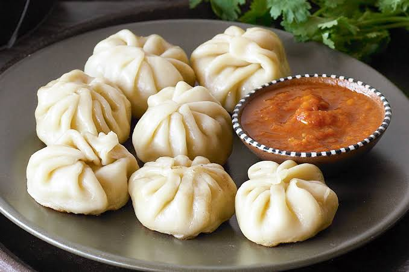

Momo is a popular dumpling dish, especially associated with Nepal, Tibet, and the Himalayan region. It consists of a thin dough wrapper filled with ingredients such as minced meat, vegetables, or cheese. The dumplings are usually steamed, although they can also be fried or cooked in other ways.
Momos are commonly served with a spicy dipping sauce, often made with tomatoes, chilies, garlic, and spices. In Nepal, you’ll find them everywhere from street stalls to restaurants, and they come in many varieties, such as buff (water buffalo), chicken, vegetable, and jhol momo, where the dumplings are served in a spicy, soupy sauce.